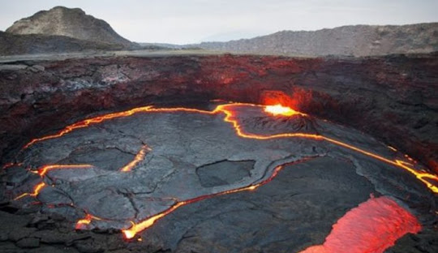
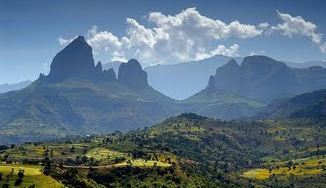
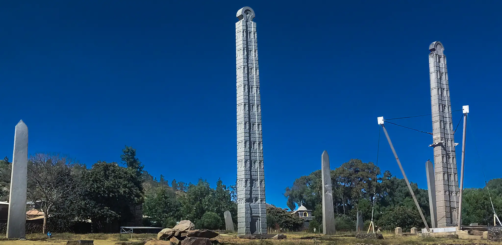
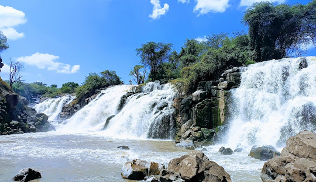
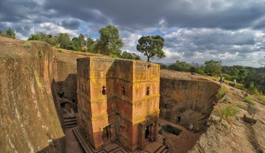
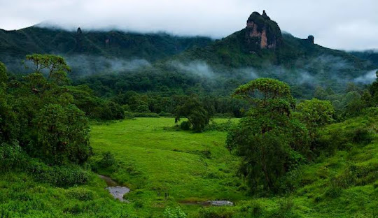
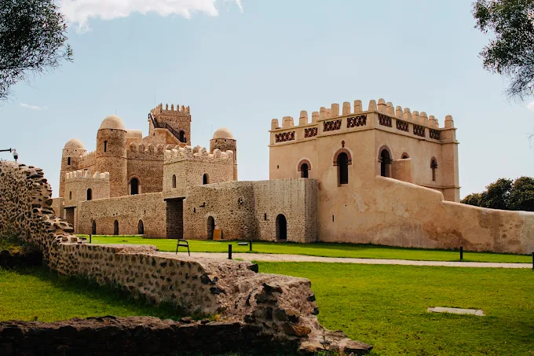

Explore Our Gallery
Discover the beauty of Ethiopia through images

Erta Ale is a continuously active basaltic shield volcano in Ethiopia’s harsh Danakil Depression. Standing 613 meters tall, it is globally famous for harboring the Earth’s longest-existing persistent lava lake, a feature it has maintained since at least 1906.

Addis Ababa, the capital of Ethiopia, is Africa’s highest city and a major diplomatic hub. Often called the "political capital of Africa," it serves as the headquarters for the African Union and the United Nations Economic Commission for Africa, featuring representation from nearly every foreign embassy.

Ras Dashen (also spelled Ras Dejen) is Ethiopia's highest mountain and the 10th highest in Africa, reaching an elevation of 4,550 meters (14,950 feet). This towering peak is located within the dramatic terrain of the Simien Mountains National Park in the Amhara Region.

Axum (or Aksum) is an ancient city in Ethiopia’s Tigray region. It was the powerhouse of the Kingdom of Aksum (1st to 8th century AD), a major global trading empire connecting the Roman Empire, Africa, and India. It is globally renowned for its massive monolithic stelae and cultural significance.

Established in 1966, Awash National Park is Ethiopia's oldest and most accessible national park. Located approximately 225 km east of Addis Ababa, the 827-square-kilometer reserve features dramatic acacia savannahs, volcanic landscapes, the roaring Awash River Falls, and serves as a premier destination for birdwatching and wildlife safaris.

Lalibela is famous for its remarkable rock-hewn churches carved directly into stone during the 12th century. It is one of Ethiopia’s most important historical and spiritual destinations.

Bale Mountains National Park is a massive 2,150-square-kilometer protected area in southeastern Ethiopia, renowned for containing Africa's largest Afro-alpine habitat and the continent's largest continuous cloud forest.

Addis Ababa is known as "New Flower" in Amharic, it serves as the diplomatic, political, and economic hub of the continent, housing both the African Union and the UN Economic Commission for Africa.